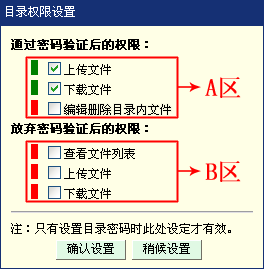
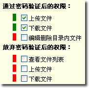
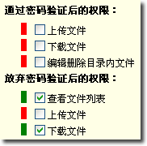
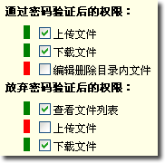

目录权限的触发
增加或修改目录时输入目录密码即可触发目录权限设置，在确认增加目录时，会弹出如下图的设置窗口

目录权限设置技巧
对于不同的使用需要，可以对目录设置不同的打开方式：
| 1. |
只可以通过密码验证后打开，不允许放弃验证： “A区”内至少打开一个权限，“B区”内3个权限全部关闭。如右图 设置后目录前面会显示权限图标，目录图标为 点击查看目录权限图标说明 |
 |
| 2. |
不需要密码验证，直接以放弃验证的方式打开目录： “A区”内3个权限全部关闭，“B区”内至少打开一个权限。此时，设置的目录密码只是起到触发目录权限的作用。如右图 设置后目录前面会显示权限图标，目录图标为 |
 |
| 3. |
通过密码验证和放弃密码验证拥有不同的权限： “A区”和“B区”内都至少打开一个权限。如右图 设置后目录前面会显示权限图标，目录图标为 |
 |
注意事项：